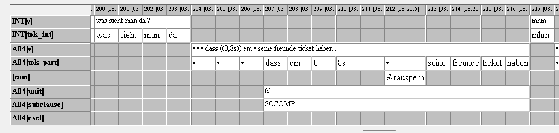

| Tag | Beschreibung | Beispiel |
|---|---|---|
| DEC | Äußerungseinheit in Form eines Deklarativs | und dann hat der kleiner bruder n ball so geworfen (E19_A05) |
| INT | Äußerungseinheit in Form eines Interrogativs | hast du fahrkarte oder (E04_B10) |
| WINT | Äußerungseinheit in Form eines W-Interrogativs | was passiert (E05_B08) |
| IMP | Äußerungseinheit in Form eines Imperativs | Und dass wegen lass die leute in ruhe (E18_A04) |
| BREAK | (+) als ergänzendes Tag für abgebrochene, verbhaltige Äußerungen | aber ich hab ge/ (DECBREAK, E14_B07) |
| DISC | (+) als ergänzendes Tag für unvollständige verbhaltige Units, die durch diskursive Rekonstruktion sinnvoll erweitert werden können | diesen schockmoment, das kann man richtig fühlen, wenn man in die tasche guckt und – die hausaufgaben nicht hat (E11_B02) |
4 Segmentierung der Äußerungseinheiten
4.1 Spuren bei der Segmentierung
Für die Segmentierung wurden folgende zusätzliche Spuren eingerichtet:
| [unit] | segmentierte Äußerungseinheiten |
| [subclause] | abhängige Nebensätze |
| [excl] | ausgeschlossenes Material (z.B. Korrekturen, Wiederholungen) |
Bei Bedarf können zusätzlich folgende Spuren (ebenfalls als Annotationsspuren) erzeugt werden:
| [unit2-x] | Einschübe in Form von Äußerungseinheiten, analog zu [unit] |
| [subclause2-x] | abhängige Nebensätze |
4.2 Grundlage der Segmentierung
Um die Transkripte in Äußerungseinheiten zu segmentieren, die die Arbeit des automatisierten POS-Taggings und der Lemmatisierung erleichtern, wurde sich an der Analysis of Speech Unit von Foster et al. (2000) orientiert und die Operationalisierung der Segmentierungseinheiten fürs Deutsche spezifiziert und exemplifiziert. Das folgende Kapitel dokumentiert das Vorgehen und markiert allgemeine Modifikationen aus dem Vorgehen von Foster et al. (2000). Die Segmentierung beruhte v.a. auf syntaktischen Kriterien, wobei zur Disambiguierung teilweise auch semantische und/oder intonatorische Kriterien herangezogen wurden.
Jedes Token (außer Pausen) der [tok_part]-Spur ist von einer Annotation auf [unit] oder [excl] überspannt. Wo möglich, wurden Spannannotationen der Annotation einzelner Tokens vorgezogen. (So wurde etwa bei zwei Tokens, die als false start gewertet wurden, eine Spanne mit entsprechendem Tag über beide Tokenevents auf [excl] gezogen.) Grundsätzlich wurden Spannen auf [unit] so eng wie möglich angelegt, um einem möglichst minimalen Anspruch an Äußerungseinheiten gerecht zu werden.
4.3 Definition einer Äußerungseinheit (=unit)
Foster et al. (2000) orientieren sich bei der Definition ihrer AS-Unit an der t-unit. Eine Äußerungseinheit oder AS-unit (unit) ist eine Äußerung einer Sprecher:in, die aus einer eigenständigen/unabhängigen clause (“independent clause”) oder einer “sub-clausal unit” zusammen mit allen abhängigen clauses/Nebensätzen besteht.
Eine eigenständige/unabhängige clause besteht aus mindestens einem Verb, das, anders als bei Foster et al. (2000), finit oder infinit sein kann, und maximal einem Verbalkomplex auf unit-Ebene. Weitere Verbalkomplexe können in abhängigen Nebensätzen auftreten.
Eine eigenständige Äußerungseinheit bilden Matrixsätze (vgl. Kapitel 4.5) auch dann mit den von ihnen abhängigen clauses, wenn diese keine Nebensatzwortstellung aufweisen (vgl. Kapitel 4.8).
Beispiel: sie hat gesagt ich hab keine fahrkarte (E10_B10)
Äußerungseinheiten wurden auf der Spur [unit] als Spannen annotiert. Dabei wurde differenziert zwischen eigenständigen verbhaltigen clauses und nicht verbhaltigen sub-clausal units. Die Tags ergänzen die Funktion der Äußerungseinheit oder den Typ der sub-clausal unit (vgl. Kapitel 4.7).
4.4 Unvollständige Äußerungseinheiten
Unvollständige units (und auch Nebensätze) können mit folgenden Tags differenziert werden (vgl. Kapitel 4.7):
Wenn eine unit nach Produktion eines Verbs ersichtlicherweise abgebrochen wurde, wird sie mit dem zusätzlichen Tag BREAK getagged.
Beispiel: die buch ist (E02_B02)
Handelt es sich um eine unvollständige, aber verbhaltige und nicht abgebrochene Äußerung, die durch den diskursiven Kontext sinnvoll erweiterbar ist, wird mit dem zusätzlichen Tag DISC gearbeitet.
Beispiel: was macht die mutter da? – schimpfen (E01_A05)
Beispiel: diesen schockmoment, das kann man richtig fühlen, wenn man in die tasche guckt und – die hausaufgaben nicht hat (E11_B02)
4.5 Matrixsätze
Als Matrixsätze werden alle Sätze bezeichnet, von denen eine subclause abhängig ist. Matrixsätze wurden entsprechend der auf [unit] eingerichteten Tags annotiert; die Eigenschaft eines Satzes als Matrixsatz wird durch die Integration einer subclause und die entsprechende Spurstruktur erfasst, die Tags selbst differenzieren zwischen unterschiedlichen Äußerungstypen und sind nicht explizit als Matrixsätze erfasst.
Nicht realisierte Matrixsätze, von denen eine subclause abhängig ist, wurden mit Ø auf [unit] dargestellt. Die Extension entspricht der Spanne auf [subclause].

Hauptsatzförmige Sätze, die von einem Matrixsatz abhängig sind, wurden als abhängige Sätze auf [subclause] erfasst (vgl. Kapitel 4.8 für das spezifische Vorgehen).
4.6 Vor- und Nachlaufelemente
Topikalisierte NPs und adverbiale Prä-Vorfelder wurden als Teil der unit erfasst.
Beispiel: dann er hat lachen (E06_B11)
Nachlaufelemente wurden entweder als Teil der vorangegangenen unit erfasst oder bildeten eine eigene unit:
Sie wurden, sofern sie aus syntaktischer, intonatorischer und pragmatischer Perspektive als Nachfeldbesetzung gesehen werden können, als Teil der unit “eingespannt”.
Beispiel: ich hab nicht geschwommen leider (E02_B02)
Auch tag questions wie oder wurden als Teil der vorigen unit gefasst, deren Annotation sich aus der Struktur der Äußerung ergibt; die Äußerung einer tag question führte nicht dazu, dass die gesamte Äußerung als Frage (WINT/INT) erfasst wird.
Eine lange Pause und/oder anaphorische Marker (z.B. also) führten hingegen dazu, die beiden Äußerungen als getrennt zu betrachten und das Nachlaufelement einzeln zu taggen. Das Nachlaufelement konnte hierbei oft als DISC erfasst werden (vgl. Kapitel 4.7.2).
Beispiel: die anderen sprechen mit den. also mit diese mädchen (E16_B10)
4.8 Abhängige clauses / Nebensätze
Abhängige Sätze bestehen aus mindestens einem finiten oder infiniten Verb und einem weiteren Element (Subjekt, Objekt, Komplement oder Adverbial) (vgl. Foster et al. (2000)). Anders als bei Foster et al. (2000) zählen hier auch Subjunktionen und zu-Infinitive als weitere Elemente.
Nebensätze wurden auf der Spur [subclause] nach Typ in Form von Spannen unterhalb der [unit]-Spur annotiert. Die Differenzierung nach Typen ist nicht Foster et al. (2000) entnommen.
Auch Nebensätze mit abweichender Verbstellung wurden nach Funktion in Form von Spannen unterhalb der [unit]-Spur annotiert; Verbletztstellung ist also kein ausschlaggebendes Kriterium dafür, auf [subclause] getagged zu werden. Relevant war ihre Abhängigkeit von einem Matrixsatz.
Nebensätze, die von Matrixsätzen auf [unit2] abhängig sind, werden unabhängig davon auf [subclause] (bzw. [subclause2], wenn [subclause] schon “belegt” ist) annotiert.
Beispiel: dann mama hat hm ich hab vergessen wie heißt das auf deutsch tea zum diese junge geben (E01_C02)
Auch hauptsatzförmige Sätze, die von einem Matrixsatz abhängig sind, wurden auf [subclause] erfasst. Diese wurden mit dem Tag MCSUB markiert und einem Zusatztag, das, analog zu den Tags auf DEC, die Funktion der Äußerung annotiert.
Beispiel MCSUBDEC: ich glaube ich habe namen falsch gesagt (E12_B07)
Beispiel MCSUBWINT: und hier die fragt, wie viel kostet ee so etwas (E02_B09)
Die Entscheidung, ob der potenzielle MCSUB eingebettet ist oder nicht, ergab sich daraus, ob der potenzielle Matrixsatz alleinstehen kann. Wenn er nicht alleinstehen kann, liegt auf [subclause] ein MCSUB vor:
Beispiel: ich glaube ich habe namen falsch gesagt (E12_B07)
Hier liegt auf [subclause]-Ebene ein MCSUBDEC vor.
Können dagegen beide Sätze alleinstehen, wird DEC DEC erfasst.
Beispiel: ich denke gerade. unterbrich mich nicht. (konstruiertes Beispiel)
So wurde zum Beispiel auch wörtliche Rede als MCSUB und die sie einleitende Äußerung auf [unit] als Matrixsatz getagged.
Beispiel: der hat halt gesagt was machst du (E12_B07)
Zusätzlich differenzieren wir, analog zu den Tags auf [unit]:
verbhaltige, aber abgebrochene Nebensätze mit dem Tag-Zusatz BREAK (Intonation beachten!)
Beispiel: weil die haben ee in bücher ge/ (E05_B09)
DISC: auf [subclause] nur bei verbhaltigen Äußerungen, die aus dem diskursiven Kontext heraus sinnvoll erweitert werden könnten.
Beispiel: entschuldigung, dass ich diesen buk zerstört habe oder ja zerstört (E07_B02)
subclausal units auf [subclause], also nicht verbhaltige, aber eingeleitete und nach Funktion differenzierbare Nebensätze mit dem Tag-Zusatz SCU. Dieses Vorgehen weicht von Foster et al. (2000: 368) ab, die nicht verbhaltige subordinierte Einheiten exkludieren.
Beispiel: weil ich kein ticket (E04_B07)
4.10 Mehrfache Einbettung / Einschübe
Hauptsatzförmige Einschübe wurden auf [unit2] (im Folgenden Beispiel als DEC) annotiert:
Beispiel: das war ich glaube leichter als die andere drei (E07_B02)
Die Differenzierung zu MCSUB ergibt sich daraus, dass auf unit2 getaggte Äußerungen einen Einschub innerhalb eines Hauptsatzes darstellen, während Matrixsätze mit MCSUB Hauptsätze mit von ihnen abhängigen Äußerungen darstellen.
Mehrfach eingebettete Nebensätze wurden mit zusätzlichen Spuren [subclause2], [subclause3] annotiert. Wenn sich eine subclause auf [unit2] bezieht, wird diese unabhängig davon trotzdem auf [subclause] (oder [subclause2], wenn [subclause] schon “belegt” ist) annotiert.
4.11 Ausgeschlossenes Material
Abbrüche, Wiederholungen und Selbstreparaturen wurden von den weiteren Annotationsschritten ausgeschlossen. Sie wurden daher auf einer separaten Spur [excl] annotiert und klassifiziert. Ausnahmen bildeten verbhaltige Abbrüche, die auf [unit] und [subclause] entsprechend getagged und zusätzlich mit BREAK markiert wurden (vgl. Kapitel 4.4).
4.11.1 Abbrüche (false starts)
Abgebrochene, verblose Äußerungen (egal, ob es durch die Sprecher:in selbst oder eine Unterbrechung geschieht) wurden nicht als Äußerungseinheiten, sondern mit dem Tag falst als Abbrüche markiert.
Beispiel: und dann (E06_A05)
Verbhaltige Abbrüche wurden, anders als bei Foster et al. (2000) nicht exkludiert, sondern gemäß ihrer Funktion (also bspw. mit DEC) getagged und zusätzlich mit BREAK markiert (vgl. Kapitel 4.4).
4.11.2 Wiederholungen
Bei Wiederholungen wurde zwischen unterbrochenem Redefluss, Stottern sowie Halten des Rederechts auf der einen Seite und rhetorisch motivierten Wiederholungen auf der anderen Seite unterschieden; erstere wurden mit doub als Wiederholungen markiert.
Beispiel: die die kinder spielen (E01_A05)
Dabei wurde nur das jeweils letzte Wort bzw. die jeweils letzte Phrase nicht markiert. Rhetorisch motivierte Wiederholungen (Beispiel: Das ist sehr sehr lecker) werden als Teil der Äußerungseinheit angesehen und nicht auf [excl] markiert.
4.11.3 Selbst-Reparaturen / Korrekturen
Wird ein Teil einer Äußerung unmittelbar durch eine Reformulierung repariert / korrigiert, wurde der zu reparierende Teil nicht als Teil der Äußerungseinheit segmentiert, sondern mit repair auf [excl] getagged.
Beispiel: deine bruder lernen ee ein buch lesen (E01_B07)
Äußerungen, für die lediglich ein Korrekturbedarf angezeigt wird, wie z.B. Das ist ein Hund – Nein! oder auch Das ist ein Hund – Nein! Kein Hund! (konstruiertes Beispiel) wurden nicht ausgeschlossen.
4.11.4 Vorgelesene Passagen
Wird sprachliches Material von der Proband:in vorgelesen, aus dem Gedächtnis “zitiert”, wie bei der Wiedergabe von Aufgabenstellungen, oder direkt von der Interviewer:in übernommen, wird dies mit dem Tag read ebenfalls exkludiert.
Beispiel: thema ist wie hast du mutti kennengelernt (E02_B02)
Beispiel: das ist ein korb, sagt man – ein korb? (E03_A04)
4.11.5 Hesitationsmarker
Isolierte, also außerhalb von units auftretende Hesitationsmarker (em, mh, ee) wurden mit dem Tag hes ebenfalls auf [excl] getagged und damit ausgeschlossen.
Äußerungsinterne Hesitationsmarker, Interjektionen, fremdsprachliches Material etc. wurde im folgenden Annotationsschritt auf der [pos]-Spur markiert bzw. korrigiert und differenziert.
4.11.6 Unterbrechungen / Scaffolding
Unterbrechungen durch die Gesprächspartner:in oder Dritte müssen bei der Segmentierung in Äußerungseinheiten nicht beachtet werden. Die Spanne wird ungeachtet der Unterbrechung über die von der Lerner:in geäußerte Einheit gezogen.
4.12 Ziel der Segmentierung und der Selektion ausgeschlossenen Materials
Am Ende dieses Verarbeitungsschrittes liegt ein Transkript vor, in dem alle Lerner:innen-Äußerungen mindestens über [unit] ODER [excl] getagged wurden. Außerdem wurden ggf. subclauses und verbale Koordination erfasst. Anhand der excl-Spur konnte anschließend eine “cleane” Spur ([ctok_part]) erzeugt werden, die nur Tokens enthält, die auch über [unit] erfasst wurden, und alles, was über [excl] erfasst wurde, ausschließt.